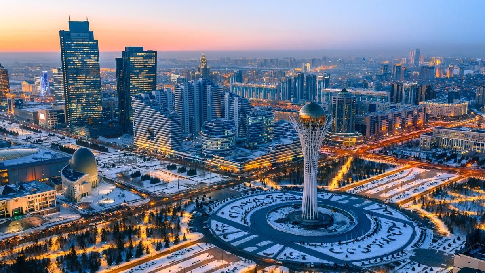

АСТАНА ҚАЛАСЫ

Астана — Қазақстан Республикасының астанасы және елдің саяси, әкімшілік, экономикалық, мәдени орталықтарының бірі. Қала елдің солтүстік бөлігінде, Есіл өзенінің жағасында орналасқан. Астана — тәуелсіз Қазақстанның символына айналған заманауи әрі қарқынды дамып келе жатқан қала.
Астананың тарихы терең. Бұл өңірде ерте заманнан бері адамдар қоныстанған. Қаланың ресми негізі 1830 жылы қаланды. Алғашында бұл жер Ақмола деп аталды. Кейін қала Целиноград, одан соң қайтадан Ақмола атауын алды.
1997 жылы Қазақстанның астанасы Алматы қаласынан Ақмолаға көшірілді. 1998 жылы қала атауы Астана болып өзгертілді. Біраз уақыт Нұр-Сұлтан деп аталғанымен, кейін қайтадан Астана атауы берілді.
Астана — болашаққа ұмтылған жас қала. Қала күн сайын өсіп, көркейіп келеді. Ол еліміздің жүрегі ретінде ерекше орын алады.